In a small and beautiful village with colorful houses and children's laughter filling its alleys, a smart little girl named Luna lived.
Behind the village, there was a tall, beautiful green hill that everyone could see from afar as it hugged the sky.
Luna loved looking at it every morning from her window, wondering with curiosity and innocence: "I wonder what the world looks like from up there?"
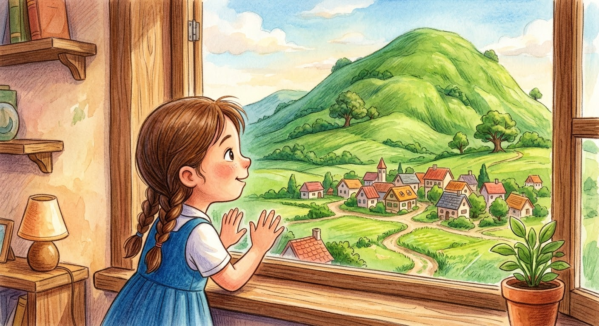
Not everyone was interested in the hill; some villagers thought climbing it was long and tiring, while others were busy with their daily chores.
As for Luna, she loved it very much and dreamed of what lay beyond.
She would tell herself with a wide smile: "When I reach its peak, I will see things I've never seen before!"
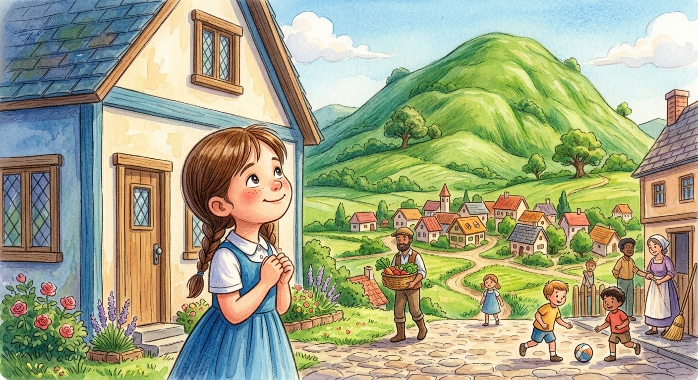
Every morning, Luna went to school with her colorful backpack full of dreams.
She loved reading very much and enjoyed drawing fairy tales, but she sometimes found "math" a bit difficult.
She would look at the many numbers in her notebook and think in quiet confusion: "How will I solve this complex problem?"
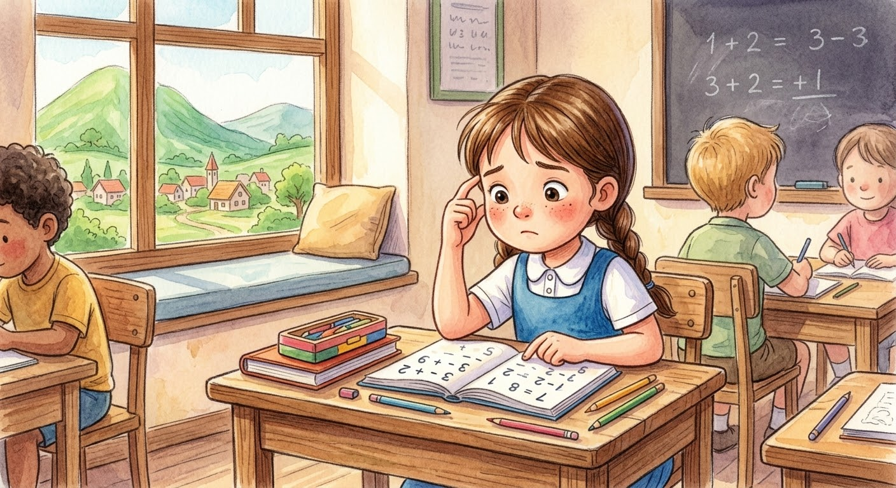
One day, when Luna made a mistake solving a math problem, she felt a little sad and lowered her head.
But her kind teacher walked over, smiled tenderly, and said:
"It's okay, Luna! We all make mistakes sometimes. A mistake is not the end, but a real opportunity to learn something new."
Luna began to think about her teacher's wonderful words, and comfort settled in her heart.
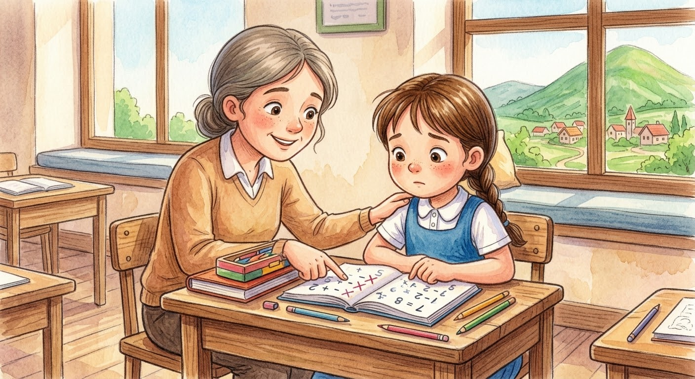
During an art class one day, the teacher asked the children to draw a place they loved dearly.
Some children drew their warm homes, while others drew the school playground where they played happily.
As for Luna, she drew the large green hill decorating her village's horizon.
It was a different and unconventional drawing, but it was special and very close to her heart.
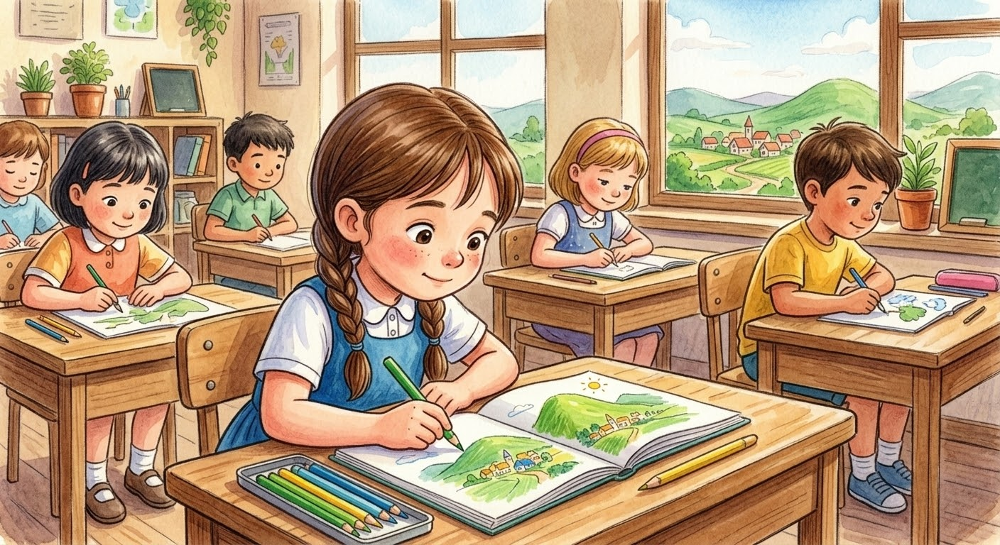
When the teacher saw the drawing, she asked Luna admiringly:
"Why did you choose to draw the hill, Luna?"
Luna replied with sparkling eyes: "Because when I climb it, I feel like I'm getting closer to my dreams."
The teacher admired the sincerity of her words and the skill of her drawing, proudly hanging it on the front classroom wall. Luna felt extremely happy and proud of herself.
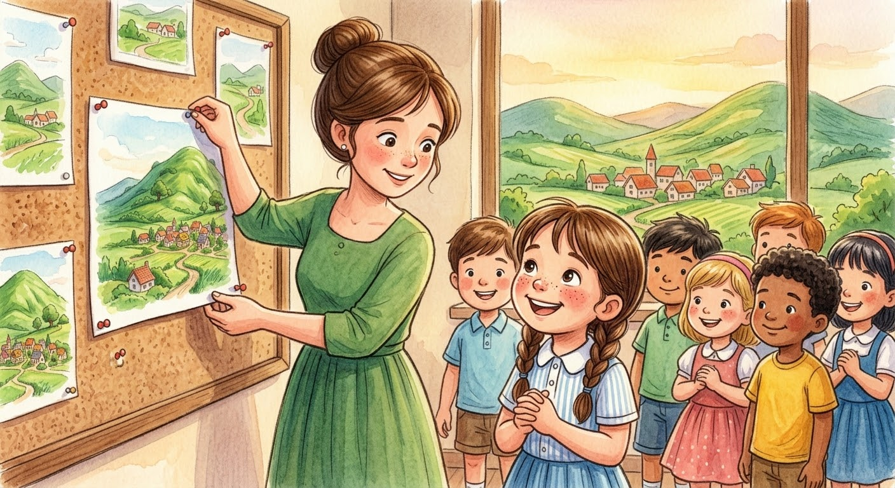
A few days later, the school announced a pleasant surprise: an exploratory trip to the green hill, accompanied by the teacher and supervisors!
The children rejoiced and their laughter filled the air, but some felt scared because the path looked long with small stones.
Luna looked at the high hill bravely, then told her determination:
"I will try! I can climb step by step and I will never give up."
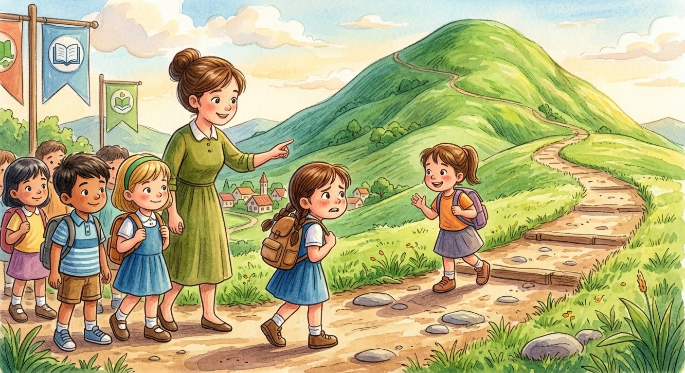
The children started climbing actively with the teacher along the safe path.
After some time, Luna felt tired, so she sat in a quiet spot to rest and sip some cold water.
She saw some of her friends ahead, and others climbing quietly near her, and thought to herself:
"There is no race; each of us has our own pace in this life."
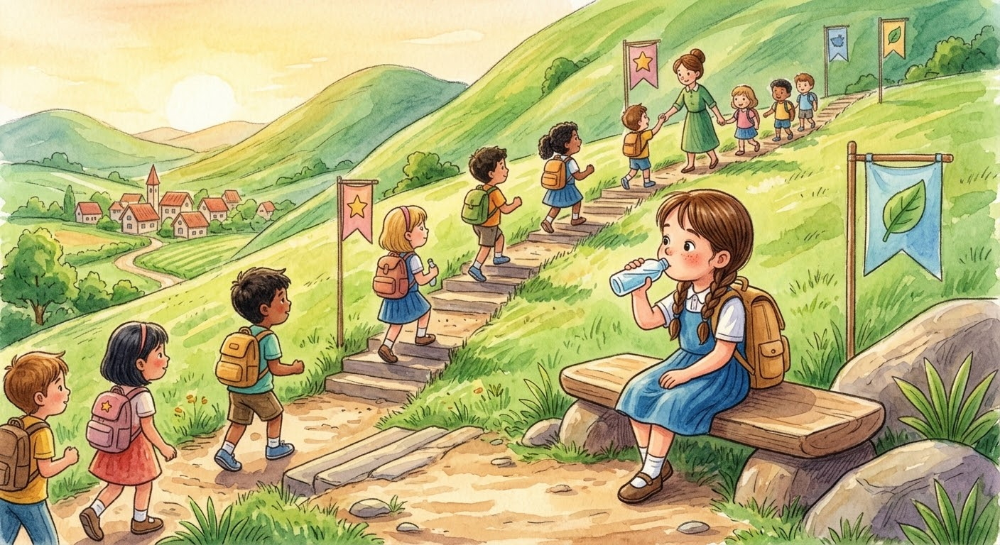
After catching her breath and regaining her energy, Luna stood up with confidence once more.
She looked at the climbing path ahead, took a deep breath, and continued her journey with her group in an optimistic spirit.
She repeated encouraging words to herself:
"It doesn't matter if I'm the first to arrive; what matters is that I try and complete my path to the end!"
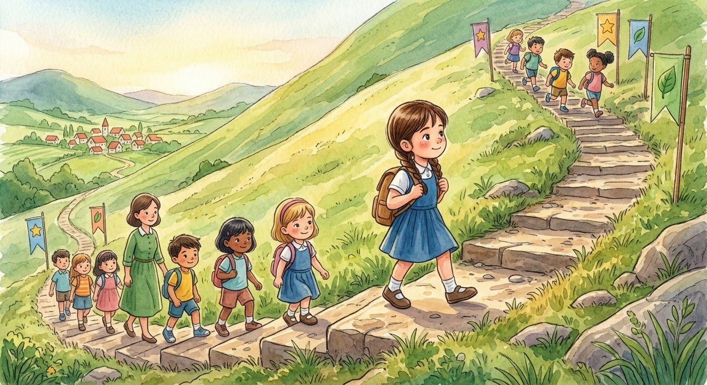
Finally, after hard work and determination, Luna and her friend reached the summit of the hill!
She looked around with great astonishment and magic; the small village houses looked like colorful toys, and its winding paths appeared among the tall green trees.
Luna smiled with overwhelming joy and said:
"I did it! The path was hard and tiring, but I never gave up."
Her heart flooded with unspeakable happiness because she tried and reached what she dreamed of.
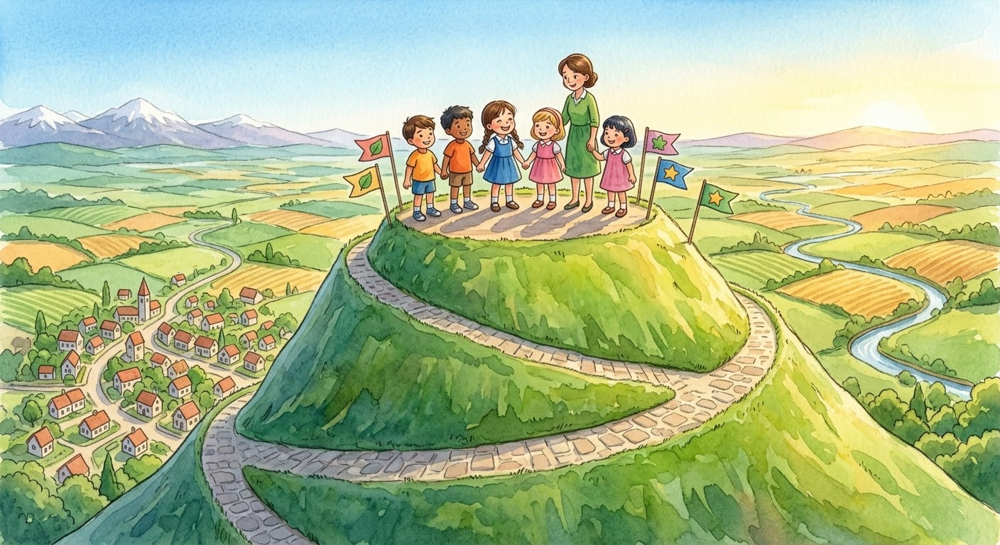
Since that wonderful day, whenever Luna faced a difficult math problem at school, she remembered her inspiring journey to the hilltop.
She began reading the problem with complete calm, trying to solve it step by step and with patience.
And if she made a mistake again, she no longer felt sad at all; instead, she tried again with persistence or gently asked for help.
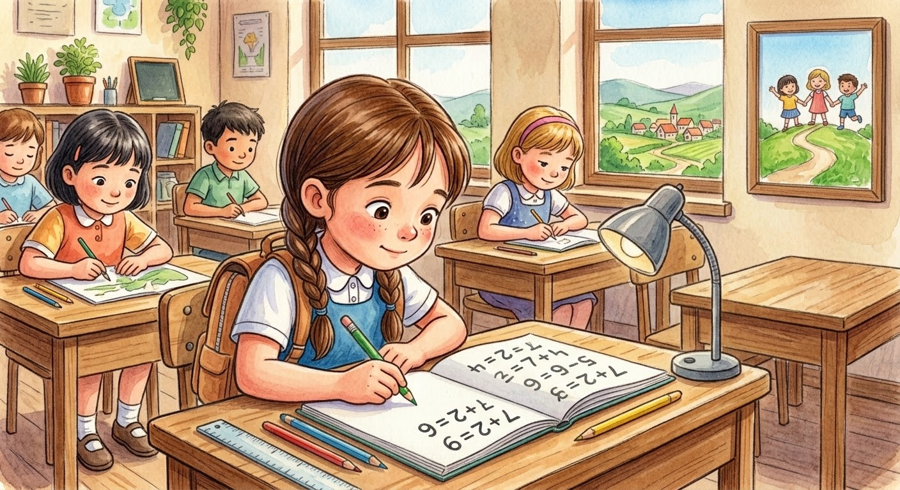
Luna learned a great lesson in her life: reaching big dreams does not require speed, but patience and continuous effort.
She didn't need to be the fastest or best at everything; it was enough for her to learn, experiment, and trust her own abilities.
💡 Remember, my little one: You don't always have to be first; every step you learn something new from is a great success in itself! 👧💗
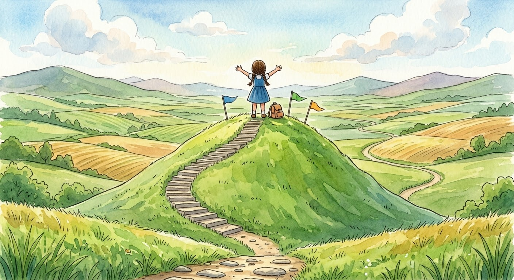